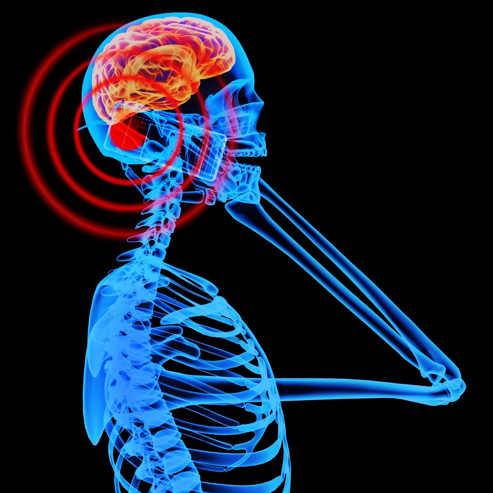

The effect of mobile phone radiation on human health is a subject of interest and study worldwide, as a result of the enormous increase in mobile phone usage throughout the world. As of 2015, there were 7.4 billion subscriptions worldwide, though the actual number of users is lower as many users own more than one mobile phone.The World Health Organization states that "A large number of studies have been performed over the last two decades to assess whether mobile phones pose a potential health risk. To date, no adverse health effects have been established as being caused by mobile phone use."
There are three main reasons why people are concerned that cell phones ( also known as mobile or wireless telephones) might have the potential to cause certain types of cancer or other health problems:
Radiofrequency energy is a form of electromagnetic radiation. Electromagnetic radiation can be categorized into two types: ionizing (e.g., x-rays, radon, and cosmic rays) and non-ionizing (e.g., radiofrequency and extremely low frequency, or power frequency). Electromagnetic radiation is defined according to its wavelength and frequency, which is the number of cycles of a wave that pass a reference point per second. Electromagnetic frequencies are described in units called hertz (Hz).
The frequency of radiofrequency electromagnetic radiation ranges from 30 kilohertz (30 kHz, or 30,000 Hz) to 300 gigahertz (300 GHz, or 300 billion Hz). Electromagnetic fields in the radiofrequency range are used for telecommunications applications, including cell phones, televisions, and radio transmissions. The human body absorbs energy from devices that emit radiofrequency electromagnetic radiation. The dose of the absorbed energy is estimated using a measure called the specific absorption rate (SAR), which is expressed in watts per kilogram of body weight.
{kind=link}
{kind=link}
{kind=link}
{kind=link}
{kind=link}